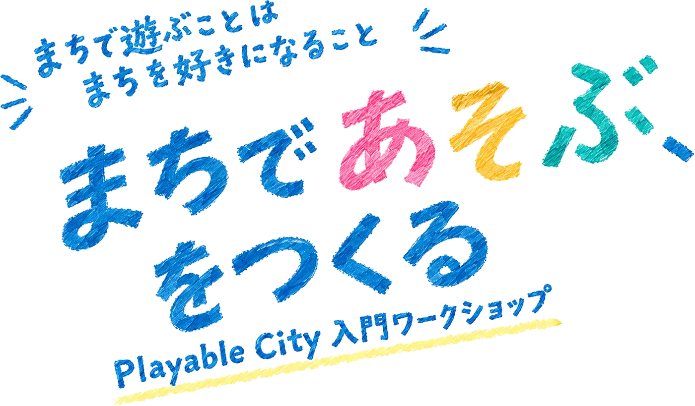
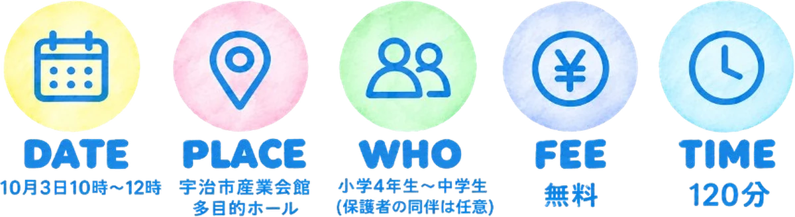

まちであそぶ、をつくる
Playable City 入門ワークショップ（宇治NEXT）／まちで遊ぶことは、まちを好きになること
DATE
2026年9月下旬
の週末
PLACE
宇治市産業会館
多目的ホール
WHO
小学4年生〜中学生
とその保護者
FEE
無料
（予定）
TIME
120分
* 対象に当てはまらないかたも、ご希望があればご相談ください。内容や人数に応じて参加いただけるか検討します。


Playable City 入門ワークショップ（宇治NEXT）／まちで遊ぶことは、まちを好きになること
DATE
2026年9月下旬
の週末
PLACE
宇治市産業会館
多目的ホール
WHO
小学4年生〜中学生
とその保護者
FEE
無料
（予定）
TIME
120分
* 対象に当てはまらないかたも、ご希望があればご相談ください。内容や人数に応じて参加いただけるか検討します。
主催宇治NEXT（宇治市・宇治商工会議所）
運営協力株式会社taliki
企画・開発野寺悠太（灘高等学校）
「通り過ぎるまち」を、
「関わりたくなるまち」へ。
私たちは毎日、まちの中を歩いています。けれど、道や広場を「目的地へ向かうための場所」として、ただ通り過ぎてしまうことも少なくありません。
Playable City は、そんなまちを「遊び」という視点から捉え直し、人が立ち止まったり、誰かと関わったりするきっかけをつくる考え方です。
このワークショップでは、そんな Playable City の考え方に触れながら、「宇治のまちに、こんな遊びがあったら面白そう」を一緒に考えます。
いつものまちを、ただ通り過ぎる場所から、少し関わってみたくなる場所へ。そんな新しいまちの見方を、一緒につくってみませんか？
知る → 体験する → つくる → 共有する。この一本の流れで120分です。
このあと、それぞれを順に紹介します。
発表して、みんなで見る
アンケート・まとめ
そして、まちを考える。
Playable City は、イギリス・ブリストルで始まった、遊びやテクノロジーを通して、人とまちとの新しい関わり方をつくる取り組みです。人の好奇心や想像力を生かし、まちに小さな仕掛けを加えることで、立ち止まる・気づく・楽しむといった新しいまちの体験を生み出します。
ただ歩くだけの道
少し遊びたくなる道
通り道が、寄り道したくなる場所に変わる。
待つだけの場所
誰かと遊べる場所
バス停や信号待ちの数分が、待ち時間ではなくなる。
ただの階段
挑戦が生まれる場所
上るだけだった段差が、遊びの装置になる。
すれ違うだけの場所
気配を感じる場所
さっき歩いた人の足あとが、次の人の体験を変える。
今回のワークショップでは、Playable City の実例から宇治を考えます。

床に投影された光の足あとを、歩いてつくる装置です。ひとりでは点にしかなりませんが、通り過ぎた人の足あとが積み重なると、一枚の絵になります。
※ 完成イメージです。当日はデモ版を体験していただきます。

01
何も見えない、暗い床から始まります。

02
踏んだところに、光の足あとが残ります。

03
足あとが重なると、模様が見え始めます。

04
歩いた人が増えるほど、模様が広がります。

05
みんなの一歩で、一枚の絵ができあがります。
当日は、同様の体験のデモ版を体験していただける予定です。
文章より絵が中心。実現できるかどうかは、いったん置いておいて大丈夫です。
宇治のあの道、あの階段、あの川べり。知っている場所を選びます。
友だち、家族、知らない誰か。ひとりで遊ぶ仕掛けでも構いません。
光る、音が鳴る、跡が残る。動く仕組みを絵で描いてみます。
その遊びに名前をつけると、誰かに伝えられるものになります。
日程は決まりしだい、このページでお知らせします。
企画・開発
宇治市未来キャンパス受講生。歩いた跡が光る装置「Color Shift Walk」をつくりながら、まちを「問題を解決する場所」だけでなく「新しい楽しさを足せる場所」として考えています。このワークショップの企画・当日の運営・装置の開発を担当します。
ほかに気になることがあれば、下の連絡先までお気軽にどうぞ。
筆記用具をお持ちください。アイデアシート（A3の紙）はこちらで用意します。動きやすい靴で来ていただけると、体験パートが楽しめます。
はい。主な対象は小学4年生〜中学生と保護者のかたです。親子で同じグループになる場合と、お子さん同士のグループにする場合があり、当日の参加者の構成を見て決めます。
主な対象は小学4年生〜中学生ですが、それ以外のかたもご相談ください。内容や人数に応じて、参加いただけるか検討します。
大丈夫です。大切なのは、きれいに描くことではなく「こんな遊びがあったら楽しそう！」というアイデアを形にすること。簡単な図や言葉だけでもOKです。
屋内で実施するため、雨天でも予定どおり開催します。中止する場合は、申込時の連絡先へご連絡します。
記録と広報のために撮影する予定です。写りたくない場合は当日スタッフにお伝えください。その旨に配慮して撮影します。